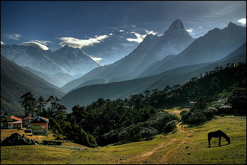

SRI LANKA TRAVEL AND TOURISM | SRI LANKA TRAVEL AGENCY | BEST TOUR OPERATOR 2019 ---- INFO@SRILANKATRAVELANDTORUISM.COM
| Horse | Horse | Horse | Horse |
Sri Lanka Travel and Tourism
TOP REASONS TO VISIT SRI LANKA in 2019
"Sri Lanka Travel and Tourism were great from start to finish! Very quick response on the first vontact as well as planning our journey atendimh to our requirements. They met all our expectations from places to visit and hotels chosen, and they got us a driver for our 6 day stay that made it all possible. I highly recommend Sri Lanka Travel and Tourism, as our experience with them was excellent.